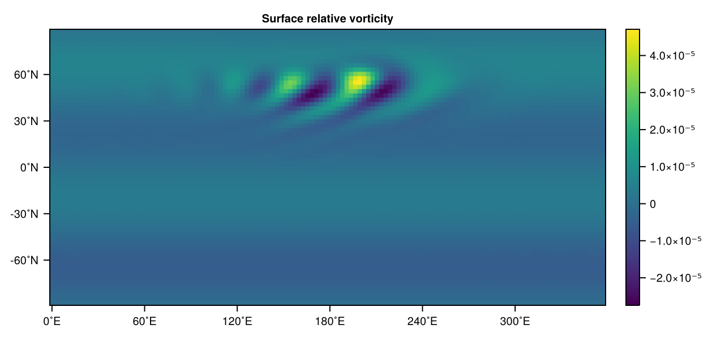
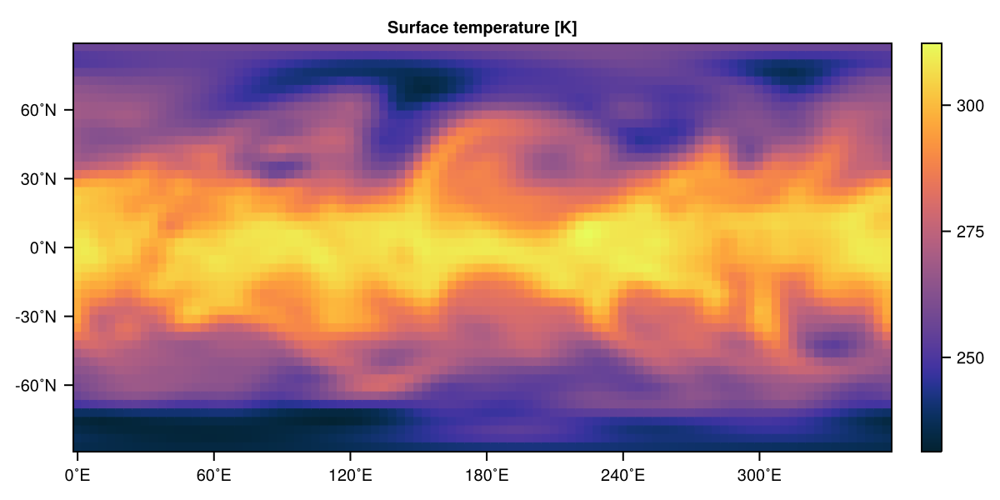
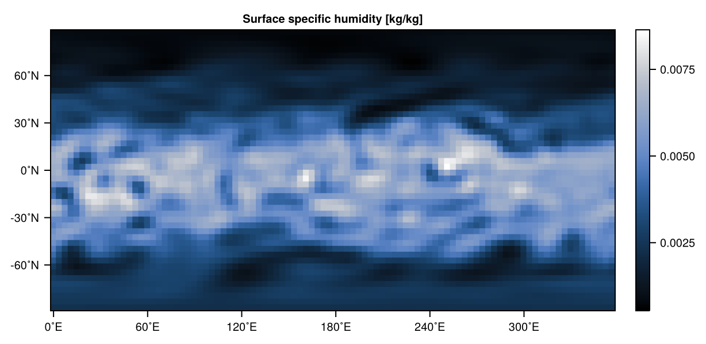
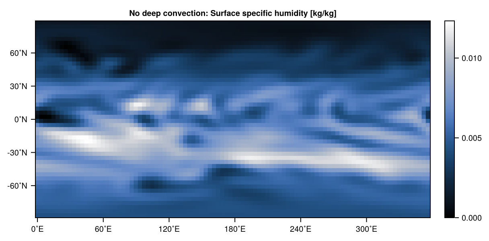
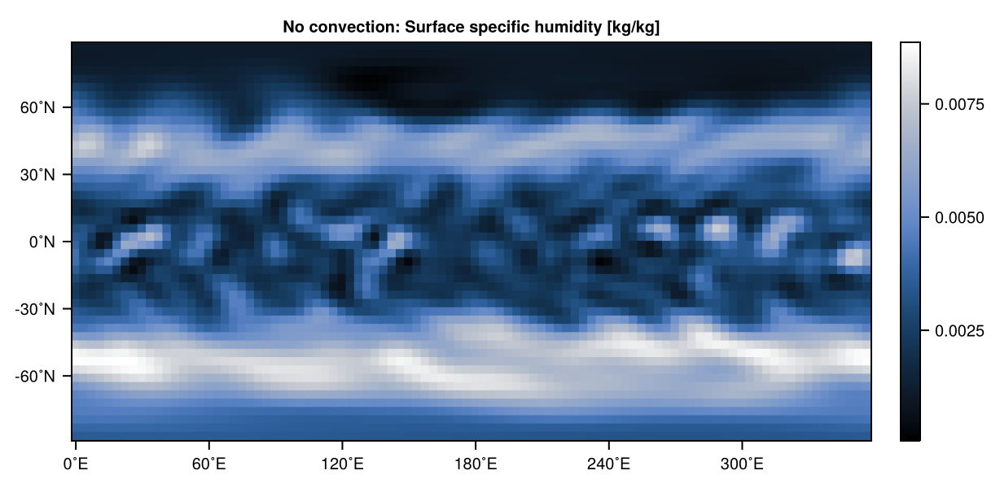

Examples 3D
The following showcases several examples of SpeedyWeather.jl simulating the Primitive equations with and without humidity and with and without physical parameterizations.
See also Examples 2D for examples with the Barotropic vorticity equation and the shallow water model.
Jablonowski-Williamson baroclinic wave
using SpeedyWeather
spectral_grid = SpectralGrid(trunc=31, nlev=8, Grid=FullGaussianGrid, dealiasing=3)
orography = ZonalRidge(spectral_grid)
initial_conditions = InitialConditions(
vordiv = ZonalWind(),
temp = JablonowskiTemperature(),
pres = ZeroInitially())
model = PrimitiveDryModel(; spectral_grid, orography, initial_conditions, physics=false)
simulation = initialize!(model)
run!(simulation, period=Day(9))The Jablonowski-Williamson baroclinic wave test case[JW06] using the Primitive equation model particularly the dry model, as we switch off all physics with physics=false. We want to use 8 vertical levels, and a lower resolution of T31 on a full Gaussian grid. The Jablonowski-Williamson initial conditions are ZonalWind for vorticity and divergence (curl and divergence of $u, v$), JablonowskiTemperature for temperature and ZeroInitially for pressure. The orography is just a ZonalRidge. There is no forcing and the initial conditions are baroclinically unstable which kicks off a wave propagating eastward. This wave becomes obvious when visualised with
using CairoMakie
vor = simulation.diagnostic_variables.layers[end].grid_variables.vor_grid
heatmap(vor, title="Surface relative vorticity")
Held-Suarez forcing
using SpeedyWeather
spectral_grid = SpectralGrid(trunc=31, nlev=8)
# construct model with only Held-Suarez forcing, no other physics
model = PrimitiveDryModel(;
spectral_grid,
# Held-Suarez forcing and drag
temperature_relaxation = HeldSuarez(spectral_grid),
boundary_layer_drag = LinearDrag(spectral_grid),
# switch off other physics
convection = NoConvection(),
shortwave_radiation = NoShortwave(),
longwave_radiation = NoLongwave(),
vertical_diffusion = NoVerticalDiffusion(),
# switch off surface fluxes (makes ocean/land/land-sea mask redundant)
surface_wind = NoSurfaceWind(),
surface_heat_flux = NoSurfaceHeatFlux(),
# use Earth's orography
orography = EarthOrography(spectral_grid)
)
simulation = initialize!(model)
run!(simulation, period=Day(20))The code above defines the Held-Suarez forcing [HS94] in terms of temperature relaxation and a linear drag term that is applied near the planetary boundary but switches off all other physics in the primitive equation model without humidity. Switching off the surface wind would also automatically turn off the surface evaporation (not relevant in the primitive dry model) and sensible heat flux as that one is proportional to the surface wind (which is zero with NoSurfaceWind). But to also avoid the calculation being run at all we use NoSurfaceHeatFlux() for the model constructor. Many of the NoSomething model components do not require the spectral grid to be passed on, but as a convention we allow every model component to have it for construction even if not required.
Visualising surface temperature with
using CairoMakie
temp = simulation.diagnostic_variables.layers[end].grid_variables.temp_grid
heatmap(temp, title="Surface temperature [K]", colormap=:thermal)
Aquaplanet
using SpeedyWeather
# components
spectral_grid = SpectralGrid(trunc=31, nlev=5)
ocean = AquaPlanet(spectral_grid, temp_equator=302, temp_poles=273)
land_sea_mask = AquaPlanetMask(spectral_grid)
orography = NoOrography(spectral_grid)
# create model, initialize, run
model = PrimitiveWetModel(; spectral_grid, ocean, land_sea_mask, orography)
simulation = initialize!(model)
run!(simulation, period=Day(50))Here we have defined an aquaplanet simulation by
- creating an
ocean::AquaPlanet. This will use constant sea surface temperatures that only vary with latitude. - creating a
land_sea_mask::AquaPlanetMaskthis will use a land-sea mask withfalse=ocean everywhere. - creating an
orography::NoOrographywhich will have no orography and zero surface geopotential.
All passed on to the model constructor for a PrimitiveWetModel, we have now a model with humidity and physics parameterization as they are defined by default (typing model will give you an overview of its components). We could have change the model.land and model.vegetation components too, but given the land-sea masks masks those contributions to the surface fluxes anyway, this is not necessary. Note that neither sea surface temperature, land-sea mask or orography have to agree. It is possible to have an ocean on top of a mountain. For an ocean grid-cell that is (partially) masked by the land-sea mask, its value will be (fractionally) ignored in the calculation of surface fluxes (potentially leading to a zero flux depending on land surface temperatures).
Now with the following we visualize the surface humidity after the 50 days of simulation. We use 50 days as without mountains it takes longer for the initial conditions to become unstable. The surface humidity shows small-scale patches in the tropics, which is a result of the convection scheme, causing updrafts and downdrafts in both humidity and temperature.
using CairoMakie
humid = simulation.diagnostic_variables.layers[end].grid_variables.humid_grid
heatmap(humid, title="Surface specific humidity [kg/kg]", colormap=:oslo)
Aquaplanet without (deep) convection
Now we want to compare the previous simulation to a simulation without deep convection, called DryBettsMiller, because it is the Betts-Miller convection but with humidity set to zero in which case the convection is always non-precipitating shallow (because the missing latent heat release from condensation makes it shallower) convection. In fact, this convection is the default when using the PrimitiveDryModel. Instead of redefining the Aquaplanet setup again, we simply reuse these components spectral_grid, ocean, land_sea_mask and orography (because spectral_grid hasn't changed this is possible).
# Execute the code from Aquaplanet above first!
convection = DryBettsMiller(spectral_grid, time_scale=Hour(4))
# reuse other model components from before
model = PrimitiveWetModel(; spectral_grid, ocean, land_sea_mask, orography, convection)
simulation = initialize!(model)
run!(simulation, period=Day(50))
humid = simulation.diagnostic_variables.layers[end].grid_variables.humid_grid
heatmap(humid, title="No deep convection: Surface specific humidity [kg/kg]", colormap=:oslo)But we also want to compare this to a setup where convection is completely disabled, i.e. convection = NoConvection() (many of the No model components don't require the spectral_grid to be passed on, but some do!)
# Execute the code from Aquaplanet above first!
convection = NoConvection(spectral_grid)
# reuse other model components from before
model = PrimitiveWetModel(; spectral_grid, ocean, land_sea_mask, orography, convection)
simulation = initialize!(model)
run!(simulation, period=Day(50))
humid = simulation.diagnostic_variables.layers[end].grid_variables.humid_grid
heatmap(humid, title="No convection: Surface specific humidity [kg/kg]", colormap=:oslo)And the comparison looks like
 
References
- JW06Jablonowski, C. and Williamson, D.L. (2006), A baroclinic instability test case for atmospheric model dynamical cores. Q.J.R. Meteorol. Soc., 132: 2943-2975. DOI:10.1256/qj.06.12
- HS94Held, I. M. & Suarez, M. J. A Proposal for the Intercomparison of the Dynamical Cores of Atmospheric General Circulation Models. Bulletin of the American Meteorological Society 75, 1825-1830 (1994). DOI:10.1175/1520-0477(1994)075<1825:APFTIO>2.0.CO;2